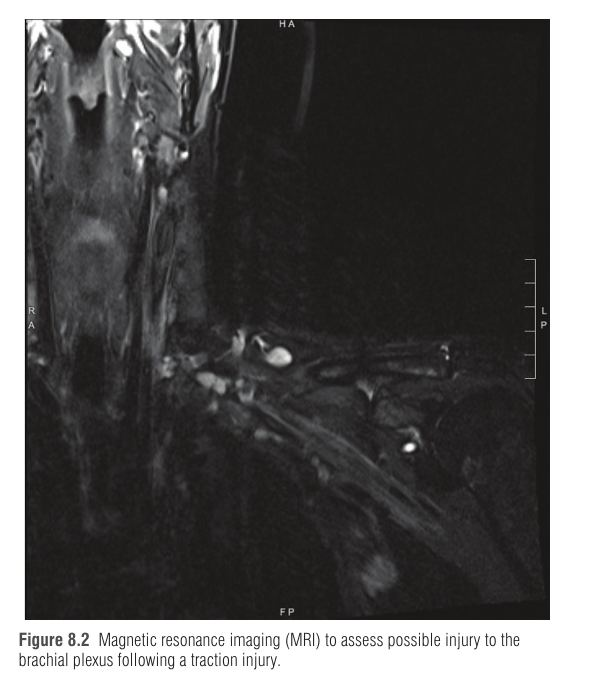
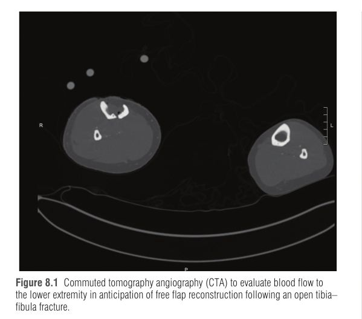
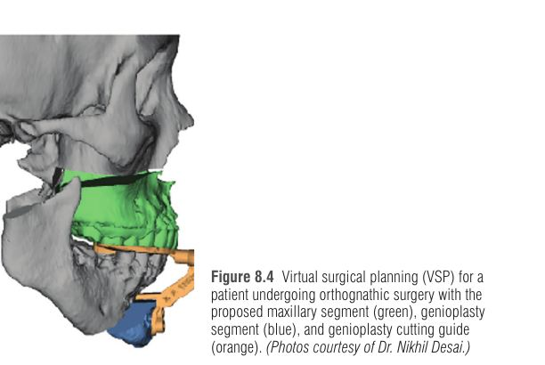
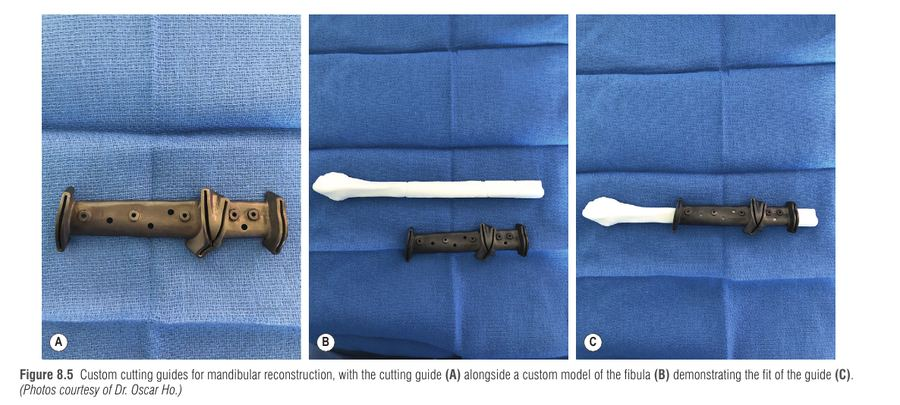
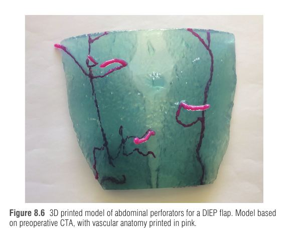
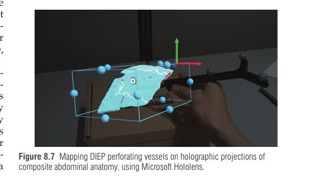

זהו פרק עקרונות-טכנולוגיה: הוא לא עוסק במחלה אחת אלא בשאלה איך רואים את מה שצריך לנתח, לפני הניתוח ובמהלכו. ההתמחות הפלסטית חזותית מטבעה (אנטומיה חיצונית, העברת רקמה על כלי דם), ולכן כל שיפור ביכולת "לראות" – צילום, חתך, זילוח, מודל תלת-ממדי – משנה ישירות את התכנון, את משך הניתוח ואת שיעור הסיבוכים. בפרק אין טיפול תרופתי או טכניקה ניתוחית אחת, ולכן הסיכום בנוי סביב עיקרון פיזיקלי, שימוש קליני ומגבלה לכל שיטה.
הרעיון המארגן: כל שיטת הדמיה מנצלת תכונה פיזיקלית אחרת של הרקמה, ולכן כל אחת "עיוורת" למשהו אחר. צילום רואה את פני השטח (אור מוחזר), CT/MRI/US רואים פנים הגוף (קרני X, מגנטיות מימן, הד קולי), ושיטות הזילוח (ICG, לייזר דופלר, תרמוגרפיה) רואים תפקוד – אם דם מגיע לרקמה – ולא רק מבנה. מכיוון שהפלאפ חי רק כל עוד יש בו זרימה, תפקוד הוא בדיוק מה שהכירורג הפלסטי צריך לדעת.
| שיטה | עיקרון | שימוש מרכזי בכירורגיה פלסטית | מגבלה עיקרית |
|---|---|---|---|
| צילום תלת-ממדי (3D photography) | סטריאופוטוגרמטריה: חישוב קואורדינטות 3D מכמה תמונות מזוויות שונות (כמו שתי העיניים) | מדידות אנתרופומטריות, נפח שד, נפח גפה בלימפדמה, הדמיית תוצאה | מדמה רק רקמה רכה (3dMD לא מדמה שינוי בעצם); תלוי איכות תאורה |
| אולטרסאונד + דופלר (US) | הד של גלי קול; דופלר = שינוי תדר מגוף נע (דם) | איתור פרפורטורים, BIA-ALCL (נוזל/סרום מאוחר), הנחיית חדירה | תלוי מפעיל; רואה בעיקר רמה שטחית |
| אנגיו-CT (CTA) | קרני X + חומר ניגוד בשלב עורקי/ורידי | מיפוי כלי דם לפני פלאפ חופשי (DIEP, טראומה של גפה) | קרינה מייננת, חומר ניגוד, ממצאים אקראיים |
| MRI | עירור אטומי מימן בשדה מגנטי חזק – ממפה מים ושומן | ניטור קרע שתל שד, BIA-ALCL, פלקסוס ברכיאלי | זמן סריקה ארוך, מתכות, עלות |
| VSP + הדפסה תלת-ממדית | CAD על בסיס חתכים תת-מילימטריים | ניתוח אורתוגנטי, שחזור לסת בפיבולה, קרניוסינוסטוזיס | עקומת למידה, עלות וזמן הדפסה |
| ICG / לייזר דופלר / תרמוגרפיה | פלואורסצנציה / הסטת אורך גל / קרינה אינפרא-אדומה | הערכת זילוח: פלאפים, כוויות, פרפורטורים, לימפה | פרשנות, עלות, תלות בהכיול (ראו סעיף 5) |
הצילום הוא הכלי הבסיסי ביותר בהדמיה פלסטית: מתעד מצב טרום-ניתוחי, ממצאים תוך-ניתוחיים ותוצאה, והוא חלק מהרשומה הרפואית-משפטית ומהסכמה מדעת (איך התמונות יישמרו וישמשו). עקרונות הצילום הסטנדרטי: האזור המטופל במרכז, רקע ניטרלי, אותה מצלמה ותאורה בכל הצילומים, והימנעות מצללים. בפנים נהוג לצלם קדמי, אלכסוני ימין ושמאל, וצדדי ימין ושמאל. בעידן הדיגיטלי חשוב לדעת שקבצי התמונה (JPG, TIFF, RAW) נושאים מטא-דאטה (הגדרות מצלמה, זמן, מיקום, בעלים) – שימושית לכירורג אך עלולה לזהות מטופל בתמונה "אנונימית", ובארה"ב היא נבחנת מול HIPAA. פירוט נוסף בפרק 7.
הבעיה: תמונה דו-ממדית מייצגת אדם תלת-ממדי, ו-CT/MRI מצוינים בפנים אך גרועים בקליטת האנטומיה החיצונית. הפתרון: stereophotogrammetry – כמו שהמוח שלנו בונה עומק משני תמונות מעט שונות שמגיעות משתי עיניים, כך מחשב בונה גיאומטריה תלת-ממדית מכמה צילומים מזוויות שונות. נולד ב-1979 (מפות קווי גובה בעזרת קליפרים, איטי מאוד), ופרח כשמצלמות ברזולוציה גבוהה ומחשוב מהיר נעשו נגישים.
| סוג | איך זה עובד | יתרון / חיסרון |
|---|---|---|
| אקטיבי | מקרינים אור מתוכנן (patterned light) ומצלמים את ההחזרים בשתי מצלמות או יותר | קל לזהות נקודות תואמות, פחות רגיש לאור הסביבה |
| פסיבי | ללא אור מובנה – משתמש בטקסטורה הטבעית של העור כנקודות ציון | דורש מצלמות ברזולוציה גבוהה; אור סביבה מטשטש פרטים |
| היברידי | משלב את שניהם | דיוק גבוה יותר של המשטח התלת-ממדי |
| מערכת | מאפיין | שימושים שתוארו בפרק |
|---|---|---|
| 3dMD | מערכות חומרה לפנים, ראש, יד, גוף, כף רגל; תוכנה שמשכבת CT על תמונה 3D ומדמה פרוצדורות | מדידות בשפה/חיך שסועים, פלגיוצפליה (דיוק עד 0.2 מ"מ), אקרומגליה, סימנים מוקדמים ללימפדמה |
| Vectra (Canfield) | סטריאופוטוגרמטריה פסיבית; חומרת פנים/ראש-צוואר/גוף ומערכת ניידת; תוכנת שד ופנים | נפח יד/אמה/זרוע בלימפדמה (מחליף תזוזת מים ומדידת היקף), טעות פחות מ-1 מ"מ מול מדידה ישירה, נפח שד |
| Crisalix | תוכנה בלבד, מצלמה צרכנית ומרחקים פיזיים; חיסרון: איכות נמוכה של צילום פוגעת בתוצאה | סימולציית הגדלת שד (מהימנה יותר בשדיים סימטריים מאשר בצנחנים או טוברוסיים), צפי נפח מסטקטומיה, ספיגת שומן |
המטופלות ציינו שהסימולציה 3D עוזרת בבחירת גודל וצורת שתל, אך חסרה בה תחושה טקטילית של שתל פיזי.

מנגנון: משדר שולח גלי קול, והמכשיר קולט את ההדים כשהם מוחזרים מהמפגשים בין רקמות. Doppler מנצל את אפקט דופלר: צליל שמוחזר מגוף נע (תאי דם אדומים) משנה תדר, ולכן אפשר לזהות איפה יש זרימה ואיפה נמצא כלי דם. היתרונות: זול, זמן אמת, ללא קרינה ונייד (אפילו על סמארטפון). השימושים: איתור פרפורטורים לפלאפים (ALT, DIEP, פלאפ אמה רדיאלי, תורקו-דורסלי, freestyle) – אנטומיית הפרפורטורים ידועה בספרות אך הדופלר מאמת את האנטומיה הייחודית של המטופלת; אימות ורידים לאנסטומוזות לימפו-ורידיות; BIA-ALCL (סרום מאוחר סביב שתל שד והנחיית שאיבה לציטולוגיה); מדידת נפח (שומן, חומצה היאלורונית, קריוליפוליזה); הנחיה תוך-ניתוחית (שכבות פאשיה בהשתלת שומן לישבן, גבולות שתל, חסמי כאב); ביד – קרעי גידים ומום כלי דם.
DSA היה תקן הזהב למיפוי כלי דם, אך הוא דורש דקירת עורק ועלול לגרום דימום, פסאודואנוריזמה ופגיעה כלייתית מחומר הניגוד. CTA הפך לחלופה המובילה: רכישה מהירה בשלב עורקי ורידי, פחות פולשני, זול יותר וסורק גם עצם, רקמה רכה וחומרה. עדיין יש קרינה וחומר ניגוד במינון דומה ל-DSA, ולכן שיקול דעת. בטראומה (דופק דיסטלי חסר, גפה איסכמית, חדירה ליד כלי גדול, דימום) CTA שינה את התכנון (בסדרה של 17 מטופלים – ב-2 מהם שינוי משמעותי; בסדרה מאוחרת, אנטומיה חריגה במחצית והתכנון השתנה כמעט בכולם). בשחזור שד CTA מאתר במדויק את מסלול פרפורטורי ה-DIEP ומקצר זמן ניתוח וסיבוכים. המחיר: ממצאים אקראיים (incidental) ב-12%–76% מהסריקות; ברובם שפירים, אך ב-1%–2% הם משנים טיפול, ובניתוח מאוחד ב-0.6% נמצאה מחלה גרורתית.

MRI מעורר אטומי מימן בשדה מגנטי חזק ומקליט את האנרגיה שהם משחררים בחזרתם למצב היסוד – ובכך ממפה את תפוצת המים והשומן. יתרונות: הבחנה מצוינת בין רקמות רכות וללא קרינה מייננת; חסרונות: סריקה ארוכה, אי-התאמה למטופלים עם שתלים מתכתיים מסוימים ועלות. בשתלי שד: MRI מומלץ לניטור קרע, החל 5 שנים לאחר ההשתלה ואז כל 2–3 שנים. כן מומלץ ב-BIA-ALCL כשהאולטרסאונד לא חד-משמעי; ביד לפגיעות רצועתיות בפרק היד (ארתרוסקופיה נשארת תקן הזהב); וב-MRI בשדה גבוה אפשר לבודד אפילו פסיקלים בפלקסוס הברכיאלי. ערכו להערכת זילוח פלאפ לא הוכח מעבר לבדיקה קלינית.
| קריטריון | US + דופלר | CTA | MRI |
|---|---|---|---|
| קרינה | אין | יש + חומר ניגוד | אין |
| זמן / נגישות | מהיר, נייד | מהיר | ארוך |
| החוזק בפלסטיקה | פרפורטורים, סרום סביב שתל | מיפוי עורקי לפלאפ חופשי | קרע שתל, פלקסוס, רקמה רכה |
| שיקול מרכזי | תלוי מפעיל | ממצאים אקראיים | מתכות ועלות |
בעבר, ההדמיה הטרום-ניתוחית עזרה להבין את האנטומיה, אך חלק גדול מההחלטות (רפיון רקמה רכה, עובי קליפת העצם) התקבלו רק בחדר הניתוח. חתכים תת-מילימטריים הכניסו CAD לניתוח, והוא איפשר VSP: סימולציה בשש דרגות חופש (תנועה בצירי X, Y, Z + yaw, pitch, roll) של אוסטאוטומיות, שמתורגמת בחדר הניתוח למדריכי חיתוך (cutting guides), סדים אוקלוזליים ולוחיות מכופפות מראש. כך מעבירים את ה"ניסוי וטעייה" מהחולה אל המחשב.
שרשרת העבודה מהדמיה לחדר ניתוח (ניווט ומציאות רבודה מוסברים בסעיף 6).
| יישום | למה VSP מתאים | תוצאה / נתון מהפרק |
|---|---|---|
| ניתוח אורתוגנטי | מקטעי עצם ניידים בכיסי רקמה צפופים עם מרווח טעות קטן; מיישר מקטעי לסת עליונה/תחתונה מול נקודות ציפלומטריות; מדמה גם רקמה רכה (למשל גניוגלוסוס בגניופלסטיה לדום נשימה בשינה) | הפרש של פחות מ-1 מ"מ בין נקודות מתוכננות לבפועל |
| שחזור לסת בפיבולה | צריך להפוך עצם ישרה לשחזור מרובה-מקטעים מעוקל, כולל מגעי קונדיל – ידנית זה פחות מדויק. תקן הזהב מאז 1989; VSP הוכנס ב-2005 | פחות זמן ניתוח, פחות זמן איסכמיה של הפלאפ, מגע עצם-עצם טוב יותר; גם לשחזור לסת עליונה. חסרון: עקומת למידה |
| קרניוסינוסטוזיס | במקום שיקול דעת אסתטי משתנה בין מנתחים – תבניות חיתוך לבנדו סופרא-אורביטלי | קיצור זמן בחדר ניתוח, אינדקסים קרניאליים ונפחים משופרים; ויכוח על עלות מול זמן הדפסה |




מאז שנות ה-80 לבניית אבות-טיפוס; כיום גם פולימרים, מתכות, סיבים צמחיים ופיגומים ביולוגיים. בפלסטיקה היא נותנת התאמה אישית בנקודת הטיפול: מודלים, מדריכים, שתלים, ואביזרי הוראה.
זו הליבה הקלינית של הפרק. שאלת היסוד: האם הרקמה תחיה? בדיקה קלינית (צבע, מילוי נימי) מוגבלת, במיוחד בעור כהה, ולכן יש שלוש שיטות משלימות.
שלוש שיטות, שלוש תכונות פיזיקליות שונות של אותו דבר – דם שמגיע לרקמה.
ICG הוא צבען פלואורסצנטי שבשימוש לזילוח מאז שנות ה-50. התכונות שהופכות אותו לכלי טוב: קליטה ופליטה מהירות, נשאר בתוך כלי הדם עם דליפה מינימלית, רעילות נמוכה, ופלואורסצנציה שניתנת לגילוי דרך כמה מילימטרים של רקמה (ומכשירים ניידים כמו SPY). מזריקים בווריד, האור המעורר גורם לו להאיר, והמצלמה רושמת היכן הוא הגיע ובאיזו מהירות. אזור שלא מתמלא = אזור שהדם לא מגיע אליו.
| הקשר | מה ICG מראה | נתון מהפרק |
|---|---|---|
| פלאפים מקומיים (2002) | פגמי מילוי | ב-50% מהמטופלים עם פגם מילוי התפתחו נמק שטחי ואפידרמוליזה; בלי פגם – כולם החלימו תקין |
| שולי עור במסטקטומיה (שחזור בשתל) | חיזוי נמק עור | רגישות 90% וסגוליות 100%, עדיף על בדיקה קלינית; ניקוי רקמה לא חיה הפחית סיבוכי ריפוי וניתוחים חוזרים, חיסכון ממוצע של 610 דולר למטופלת |
| פלאפ DIEP | אזורי זילוח: אזור I מצוין, IV חלש, II ו-III משתנים | מכריע אילו חלקים של אזורים II/III בטוחים לשימוש; הפחית נמק שומן |
| פלאפ חופשי מעי (jejunum) | זמן עד חצי מקסימום עוצמה | מתאם לכשל באנסטומוזה ורידית; הצדיק ויתור על מקטע ניטור שטחי |
| כוויה | קליטה מוקדמת מוגברת = כוויה שתחלים ללא ניתוח | מתאם לעומק קשה לכימות בגלל שונות בין חולים |
| לימפדמה (LVA) | dermal backflow בשלושה דפוסים | splash ← stardust ← diffuse: התקדמות חומרת המחלה; מזהה גם לימפדמה תת-קלינית; מיפוי הגפה הבריאה מנחה חתך |
אותו עיקרון של דופלר, אך עם אור לייזר שאורך הגל שלו קצר בהרבה מקול – ולכן מזהה תנועת תאים בנימיות העור. LDF (1984) דורש מגע בגשש (כואב בכוויה); LDI סורק מרחוק בלי מגע ויוצר מפת זילוח. כוויות: שאלת המפתח היא האם הכוויה תחלים תוך 3 שבועות (פחות צלקת) או שדרושה כריתה והשתלה; בדיקה קלינית סדרתית נשארת הנפוצה, ו-LDI מסווג חזק את ההחלמה (פלטת צבעים: תוך 14 יום, תוך 21 יום, או דרושה ניתוח). חיסרון: עלות גבוהה. מיקרוכירורגיה: סריקת הבטן לאיתור פרפורטורים פרי-טבורי (רזולוציה 3 מ"מ) – רגישות גבוהה מדופלר רגיל, ומונעת זיהוי שגוי של כלים תת-פאשיאליים כפרפורטורים; בניטור לאחר ניתוח הוא זיהה סימני סכנה 1–3 שעות לפני הסימנים הקליניים, ושימושי בעור כהה. יש לפרש מגמה בזילוח ולא ערך מוחלט, כי הערכים משתנים בין אנשים ועם ארטיפקטים של הגשש.
כל גוף פולט קרינה אינפרא-אדומה, ושינוי בטמפרטורה משנה אותה בצורה צפויה. בתרמוגרפיה סטטית רק מתבוננים; דינמית מעוררים אתגר תרמי (קירור במאוורר, חימום, טבילה) ומודדים איך הרקמה חוזרת לשיווי משקל – מידע עשיר יותר. פרפורטורים: "נקודות חמות" בבטן קשורות לפרפורטורים שמתאימים ל-DIEP ובודקים את כל הבטן בבת אחת; מזהה במיוחד פרפורטורים ישירות מתחת לעור, בעוד אולטרסאונד מזהה ברמת הפאשיה השרירית – ולכן השיטות משלימות. פלאפ: ירידה מהירה בטמפרטורה לאחר חיתוך הפדיקל ועלייה לאחר האנסטומוזה; במודלי חיות מבחינה בין חסימה עורקית לגודש ורידי, ולעיתים לפני הממצאים הקליניים. שימושים נוספים (בעיקר סדרות קטנות): מלנומה (חום מוגבר מחילוף חומרים גבוה), תסמונת התעלה הקרפלית (EMG נשאר תקן הזהב), וכוויות עמוקות – אך מוגבל מאבדן מים ואדי וחום סביבה, ואיבוד דיוק אחרי היום השלישי מהפציעה. לייזר דופלר עדיף על DIRT להערכת עומק כוויה; DIRT הוא תוסף נוח.
מערכות שמאתרות במדויק את מיקום מבנים אנטומיים ומנחות הצבת מכשירים ושתלים. שני סוגים: מבוססות תמונה (image-based) – נתוני הדמיה טרום-ניתוחית מותאמים למיקום המטופל בחדר (נפוץ בנוירוכירורגיה); מבוססות מודל (model-based) – ללא הדמיה מוקדמת, האנטומיה מחושבת מנקודות ציון עצמיות תוך-ניתוחיות (נפוץ באורתופדיה). בפלסטיקה: טראומה מקסילופציאלית ליד מוח, עיניים ובסיס גולגולת; שחזור מצד בריא שמשמש "תבנית" לצד פגוע (מסלול העין, רצפת אורביטה); אורתוגנטי – מעקב אחר קצה אוסטאוטום באוסטאוטומיית LeFort I והמיקום של מסור ביחס לעצב אלוואולרי תחתון.
| מציאות מדומה (VR) | מציאות רבודה (AR) | |
|---|---|---|
| עיקרון | תופסת את כל שדה הראייה ומחליפה את הראייה הטבעית | מעמידה מידע דיגיטלי מעל העולם האמיתי |
| דוגמאות | Vive, Oculus; הסחת דעת וכאב בכוויות בזמן חבישות (מפחית צורך באופיואידים) | Google Glass, HoloLens: מיקום LeFort I מ-VSP, פלואורוסקופיה על היד בקיבוע שברי מסרק, מיפוי פרפורטורי DIEP, הדגמת תוצאת הגדלת שד |
| סיכון | עיוורון קשב (inattention blindness) – תשומת לב לשכבה מפספסת ממצאים לא צפויים |
מכמת תוצאה אסתטית שהיא אחרת סובייקטיבית: עוקב אחרי מיקום ותנועת עיני הצופה ומודד באילו אזורי עניין (AOI) הוא מביט וכמה זמן. מראה למשל שצלקת או פטמה חסרה תופסים את המבט. שימושים: שחזור שד, שפה שסועה (שיטות Fisher, Mohler, Millard מייצרות דפוסי מבט שונים), מתיחת פנים. מבט הוא התנהגות נלמדת – מטופלים עם ניתוח קוסמטי בעבר מביטים אחרת. בהדרכה: מתחילים בוהים בכלים וידם השמאלית כמעט לא זזה, מומחים מתמקדים ברקמה; אפשר להקרין את מבט המדריך על המסך של המתמחה.
ICG – "אור": צבען שמאיר. אומר איפה הדם הגיע ובאיזו מהירות.
Laser Doppler – "תנועה": הסטת אורך גל מתאי דם נעים. אומר כמה זורם בנימיות.
DIRT – "חום": קרינה אינפרא-אדומה. אומר איפה "חם" (פרפורטור) ואיך הרקמה מתחממת/מתקררת.
S – Splash (התחלה, נקודות בודדות)
S – Stardust (כוכבים רבים, ביניים)
D – Diffuse (פיזור נרחב, חמור).
בלש רפואי מגיע לזירה ("הפלאפ") ושואל: האם הדם הגיע? הוא מושיט פנס שמאיר את הצבען (ICG), מצלמת מהירות שתופסת תאי דם בתנועה (לייזר דופלר) ומצלמה תרמית שרואה איפה חם (DIRT). כל כלי מספר אותה סיפור מזווית אחרת, והבלש הטוב מסתכל על המגמה בין הכלים ולא על מספר בודד.
אישה בת 46 עם סרטן שד מועמדת למסטקטומיה דו-צדדית ושחזור מיידי. לתכנון פלאפ DIEP עורכים אנגיו-CT של הבטן, שמראה פרפורטורים פרי-טבוריים טובים ומגלה גם קשרית ריאה זעירה שלא הייתה מוכרת (ממצא אקראי). בחדר הניתוח, אחרי הסרת השד הימני, שולי העור נראים "גבוליים" בבדיקה קלינית. מזריקים ICG ורואים אזור שולי שלא מתמלא. לאחר חיתוך הפדיקל עוברים לפלאפ, ו-ICG מראה זילוח מצוין באזור I ו-II אך חלש באזור III-IV. שנה אחרי הניתוח, לאחר שתל בצד האחר, היא מגיעה לבדיקת MRI שגרתית.